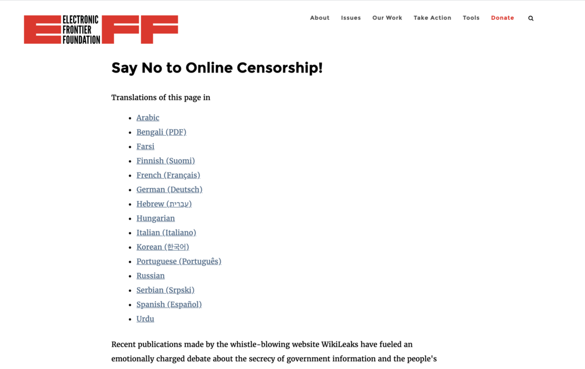
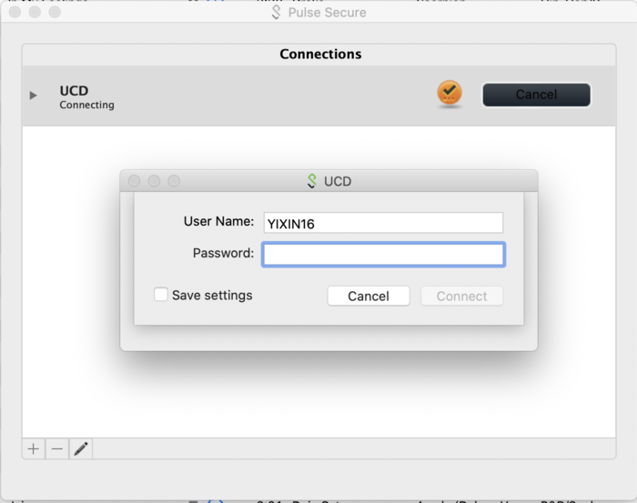

Stella Zhang
Interaction Design Comparative Research
Electronic Frontier Foundation
Electronic Frontier Foundation (EFF) is the leading nonprofit organization defending civil liberties in the digital world. One page of its website addresses online censorship issues and encourage the audience to join the “no censorship” campaign. The page is simple and emphasized on the key message. One problem I encountered is that the link to “become a member of EFF” does not work. This is a technical issue due to poor website maintenance. All the clickable contents are underlined in a different color and the color changes when mouse is hovered over. The navigation naming is mostly clear and straightforward; but there was some confusion while I navigated though the website. I was able to access the “join membership” page by going to “action center” page through navigation. However, at this page the navigation bar disappeared and is replaced by a hamburger menu with less options. From here I can go to the sign-up page, which is not available on the earlier navigation bar. The registering process is simple and clear. But it was confusing that the main navigation bar took me to signing signature for campaign instead of register first. Inside of the hamburger menu, I was able to go back to the pages with the earlier navigation bar by clicking the option “EFF.ORG.” I don’t find the navigation style intuitive at all and it can cause a lot of confusion to the viewers. The home page is way too long with the current information display style and a back-to-top button is highly needed, with which the button navigation bar can be discarded to save space and avoid ineffective duplicated information. On the shop page (under “donate” option on the navigation bar), once again, the navigation bar changes and displays a different set of options. The inconsistency of navigation is one big issue of this website.
Pulse Secure VPN
Pulse Secure provides easy, comprehensive software-driven secure access solutions for people, devices, things. It enables virtual private networks connection. I have been using the mobile and laptop app for years and I have never encountered issues with it. The app is very simple, so is its interface. It almost does not have any visual design for appealing purpose but basic functionality, which in this case I do not complain because for this type of tools I think simplicity is priority. However, some design elements could be improved, such as beautifying the look of the interface by updating it to a style that fits current trend. When adding connections to the app, there is not much explanations because the how-to can be found online offered by vpn providers. I think an on-boarding tutorial might help the first-time users to get to know the app better even though the process of adding a new connection is very simple and intuitive. And the process connecting to a network can be simplified by enabling remember settings on the laptop app so that users do not need to type out the username and password every time. I hope this feature can be added to the mobile app since typing on the phone is even more effort-requiring. During the connecting phase, I like how the app shows the connecting status explicitly so that I can get the feedback that it is working. It is also very convenient to connect through the top bar on my laptop so that I do not have to find the app and launch it. I hope this feature can be added to the mobile app as well so that I can connect or disconnect through the slide-down notification page.